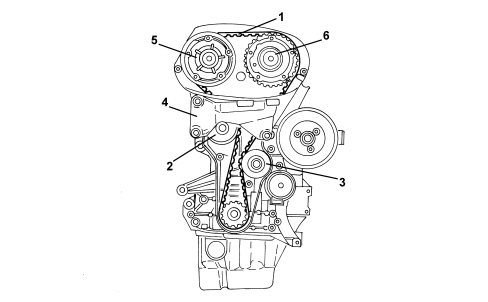

INTRODUCTION - TIMING SYSTEM
- Path
- Descriptions > 10 ENGINE > 1032 TIMING SYSTEM > INTRODUCTION - TIMING SYSTEM
- Kind
- system description
- Applies to
- engines: 1.8; all production periods
- Interactive page
- https://sloeber94.github.io/elrnDB-fCrm/en/#/194002256
Applies to: engines: 1.8; all production periods
SPECIFICATIONS
The control is direct, by means of a toothed belt (1) tensioned by an automatic tensioner (2) that does not require maintenance operations for tensioning. A cover, in three parts, protects the toothed belt from dust and from liquid that could cause premature wear.
The routing of the toothed belt has been designed to allow replacement without having to remove the timing side power unit support (4).
The driven toothed pullies are incorporated in the continuous variation timing system actuators.

1. Toothed timing drive belt
2. Automatic tensioner
3. Fixed tensioner
4. Power unit rigid support
5. Inlet side toothed driven pulley
6. Exhaust side toothed driven pulley